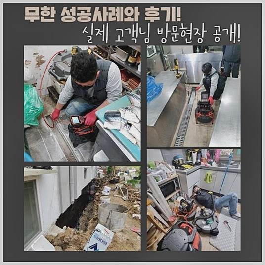
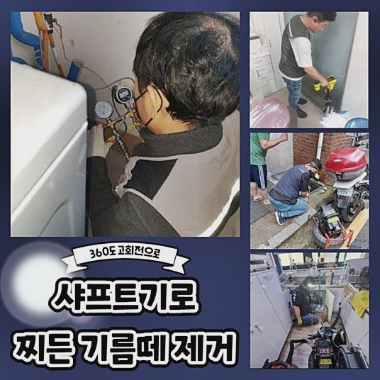
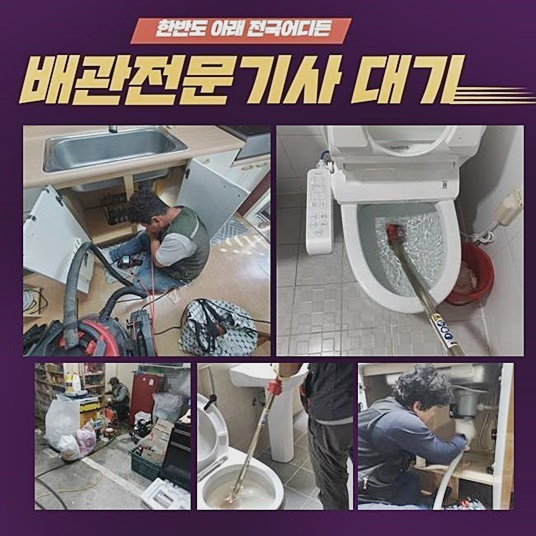
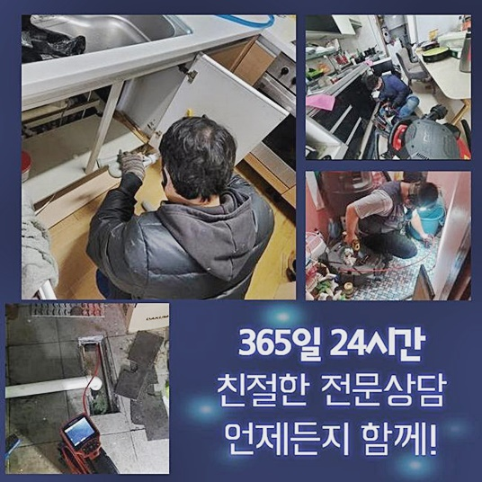
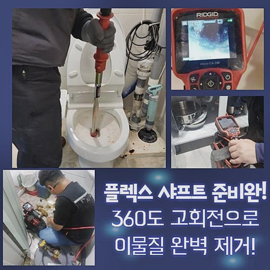

🏠 용인 유림동세탁실뚫음 백암면 고압세척비용 통수전문
용인 하수구막힘 전문 시공 후기

📋 작업 개요
- 위치: 용인
- 서비스 유형: 하수구막힘, 배관막힘, 집수정막힘, 뚫는업체, 배관청소, 고압세척
- 작업 일시: 2024. 6. 28. 9:24
- 업체명: 하수구수사대 (010-5615-2118)
🔍 문제 상황
용인 유림동세탁실뚫음 백암면 고압세척비용 통수전문
배수장애가 발생된다면 불편들이 대두됩니다
사례를 통한 막힘과 관련한 사항을 말씀드리고자하니 읽어보신다면 도움이 되실거에요
앞으로 안내드릴 현장이라 함은 구분건물 관리사무소에서 연락을 해오셨어요
의뢰인분은 주기적으로 배수관 검수를 수행해보았지만 불현듯 아파트 내 화장실쪽에도 문제들이 발생된다고 전달해주셨죠
이전에는 주변에 즐비한 근방의 배관공에게 문의를 했지만서칭한 결과 스프링장비를 넘어 다른 개체가 있다는것도 아시고 하수구를 제대로 다루는 전문진이 존재하는걸 알았고 업체들 중에서도 저희에게 연락하신 것이였죠
해마다 배관관리를 수행하더라도 하수들이 안내려가면 그 까닭은 거주지의 배수관에 자리한것이아닌 중앙시설에 있을 가능성도 있는걸 깨닫게하는 사례를 살펴보겠습니다
증상을 듣고 재빠르게 달려간 데는 한 다세대 연립주택였고, 살펴보았더니 문제근원은 집수설비에 자리하고 있었죠

🔎 원인 분석
💡 전문가 진단: 정밀 진단 장비를 사용하여 슬러지의 고착 여부를 판명하고 타격/세척 작업을 실시했습니다.
외부의 집수정의 개폐구를 개방하니 수월히 배출되지않는 형태였고 아래엔 부패한 기름때가 자리하고있어서 위생적으로 불안정한 상태였는데요
집수시설에도 이물질들이 빼곡하다면 내부도 더러울거라는 염두에두고 내시경을 사용해 정밀검수를 이어갔어요
진단 시 운용하고있는 내시경기기는 이물이 쌓인 하수관을 보게해주는 내시경장비로 화각범위가 크고 정확한 진단을 도움으로서 복잡한 배수관에서도 문제들을 잡습니다
그렇기에 잔해가 많이 있는것인지 뚜렷하게 파악해볼 수 있기에 해당 장소에선 중앙집수 설비에 슬러지가 켜켜이 쌓인 형태였으며 어째서 문제가 발발한건지 봐야했죠
증세가 발발하던 구간마다 내시경장치를 놓고 특정 구간이 어느곳인지 알고자 탐지도구를 통해 내시경의 좌표를 찾아가기 시작했어요
이 탐지장치는 내시경의 끝머리를 하수관에 삽입시킨 뒤 외부에서 진단하면 내시경이 자리한 지점에서 시그널들이 뜨고오차의 경우 25cm 사이로서 못찾는 일은 없어요
배수관은 직접적으로 안보이기에 어디가 증세가 확산된건지 추측만하기엔 구조들이 난해하기에 관로탐지기는 길이가 긴 배수관을 점검할 때 운용되고 있습니다
내시경의 경우엔 내부서 거리감이 있더라도 내시경의 좌표를 가늠할수 있지만 내시경케이블들을 내리면서 진입시키면 지금의 지점이 어디인건지 알 길이 없는탓에 탐지기기와 같이 찾는것입니다
한 곳에서만 작업들을 수행하기엔 수직관 말미에 이물들이 대다수 자리하고 있어 양 끝에서 도구를 써서 컨택하는 구간에서 스케일링들을 이어가는게 적절한 것이라 생각했죠

🔧 작업 과정
고압수청소도 사용하긴하지만 금일은 외부배관부터 안쪽에 구불구불하고 배수관의 길이감이 길진않아서 샤프트장치를 써서도 충분해보였어요
의뢰인분에게 진행될 작업들과 관련해 설명하고 바깥에도 문제가 온전치 못해서 여지껏 작업들을 해주어도 개선들이 없었기에 이번기회에 집수부도 시정해드리기로 했죠
본래엔 배수진행이 이뤄져야되지만 통로가 어디인건지 알수없을만큼 문제가 심한 상황이였고 오래돗안 단단해진 엉켜버린 슬러지들도 많았죠
흡입기구를 투입한 뒤서 안쪽 이물질을 흡입했는데 구간마다 고여있던 하수들이 빠질 기미가없어 배출되는것이 많았습니다
석션의 작동원리는 청소기와같이 압력의 차이를 운용하여 오염물을 제거시키는 장비이므로 접촉하는 지점에 틈을 조여주면 진공이 유지되며 강해진 압을 자랑하죠
지속적인 흡입들을 실시한다면 떠다니던 부유물들이 걷혀지면서 다음으로 제거시켜야 하는것은 딱딱해진 이물이기에 이물세척이 원활하게 진행될 수 있어요
그다음 샤프트로 투입한 뒤서 배관의 이물제거를 실시했는데 샤프트기기는 자동 드라이버제품을 결합시켜 켜줄 시에 그 힘이 라인으로 전달되어 상단부품인 사슬로 전송시킵니다
그러면 사슬부분의 노커체인 부분이 돌아가며 내부의 이물질들을 타격해주며 탈거시키고 세척을 이어가게되는데석션장치로 세척이 힘든 곳을 샤프트로 보충하여 세척의 완성도를 높여줍니다
이러한 스케일링작업들을 진행해줄때는 저희의 전문가들은 내시경기기를 투입시켜 안측의 진행척도를 체크해가며 작업함으로써 샤프트장치가 지나가면서 미비된 곳들이 없게끔 꼼꼼히 가능한것이죠
초입부에서 스케일링과정이 행해지고 예고없이 깊숙한 지점으로 진행시켰고 꺾이는 구조를 체크할 수 있었고 외측의 수출부에 맞닿은것을 알 수 있었습니다
그 다음으론 세척지점을 바꾸어 수출부로 가서 스케일링들을 실시하여 이물때문에 배수진행이 불가하던 집수정의 수출구는 뚫리게되어 물빠짐이 이뤄지는걸 확인했습니다
끝내기 앞서 샤프트장비를 사용해서 외부라인을 구석구석 청소해주었고 스케일링 종료 후에내시경장치로 배관의 경우 잘 문제가 없는 상태를 점검하고서 모든작업을 끝냈어요
주위의 지저분한 것도 정리해주고 현장에서 나오게 되었는데요


✅ 작업 완료
이처럼 메인관로들이 막힌 하수관들도 저희는 문제해결력을 바탕으로 문제들을 모조리 제거시킨 장소였는데요
불현듯 생긴 문제들로 조속한 내방을 실시하는 배관의 해결사들이 간절하다면 저희전문진이 그 고민을 해결해드릴게요
전국적으로 1시간을 넘기지않고 내방이 가능하며 절대적으로 고객만족들을 보장하니 주저없이 문의해주시면 됩니다!
이것말고도 궁금증이 있으시면 연락하시면 친절하게 말씀드리니 안심하세요!


⚠️ 하수구 배관 막힘 예방 및 관리 가이드
- ✅ 머리카락, 비닐, 물티슈 등 물에 분해되지 않는 이물질은 하수구 유입을 절대 금지해 주세요.
- ✅ 하수구 거름망을 씌우고 모여진 이물질은 주기적으로 쓰레기통에 바로 비워주셔야 합니다.
- ✅ 배관 노후가 심할 경우 이물질이 더 쉽게 걸리므로 주기적인 배관 세척(고압세척 등)을 권장합니다.
- ✅ 작업 후 1년 이내 재발 시 하수구수사대에서 무상 A/S 보증 서비스를 제공합니다.
💡 핵심 정리
- 확실한 장비 작업(내시경 점검 및 샤프트 스케일링)으로 원인을 뿌리 뽑습니다.
- 작업 후 1년 이내에 동일한 부위 재발 시 100% 무상 A/S 서비스를 보장합니다.
- 서울 · 경기 · 인천 전 지역에 24시간 언제든 긴급 출동할 수 있도록 항시 대기 중입니다.
❓ 자주 묻는 질문 (FAQ)
🚨 용인 하수구막힘 문제로 고민이신가요?
정확한 원인 진단과 확실한 시공으로 재발 없는 해결을 약속드립니다.
24시간 긴급 출동 | 서울 · 경기 · 인천 전지역 | 1년 내 재발 시 무상 A/S